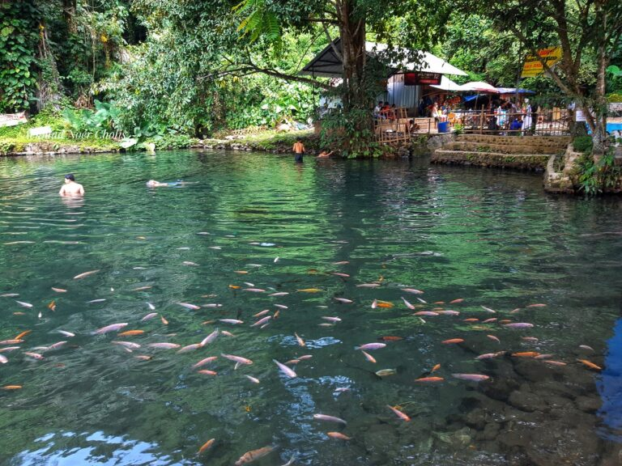
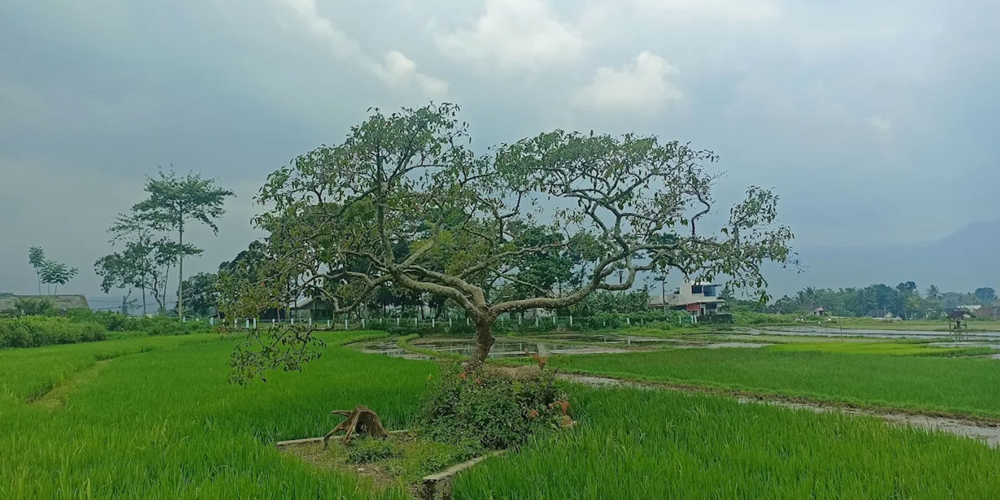
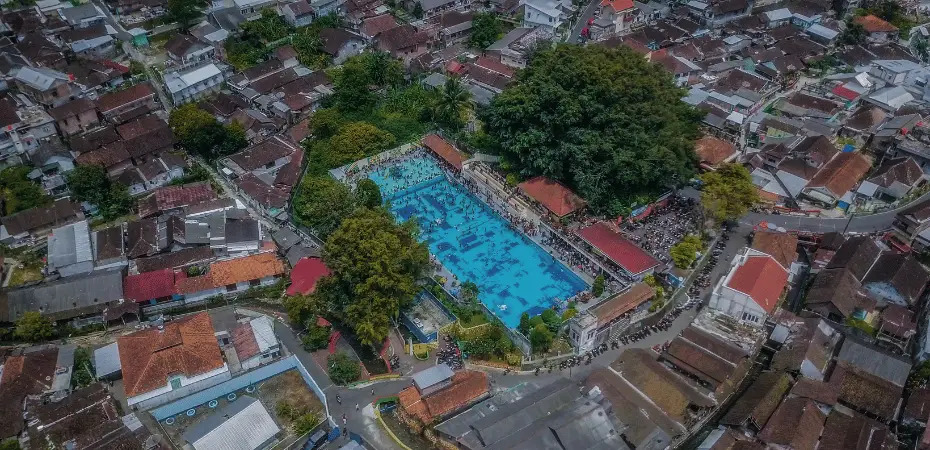
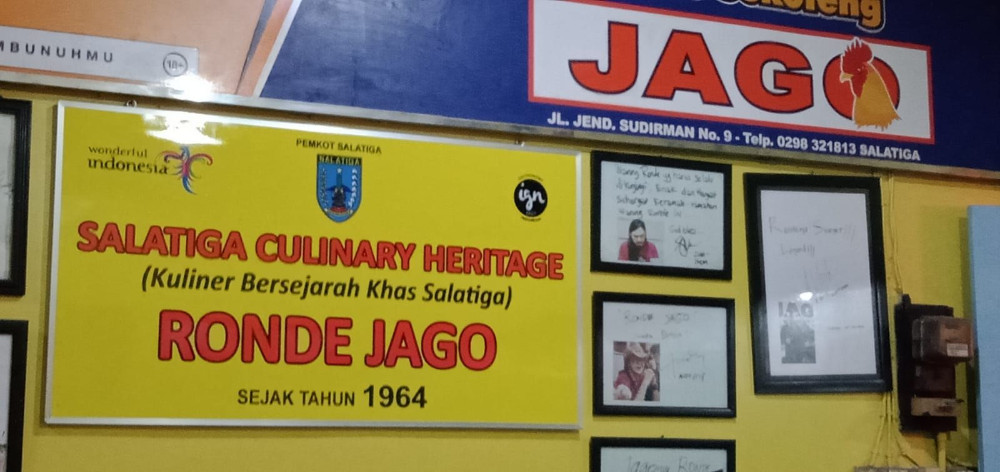
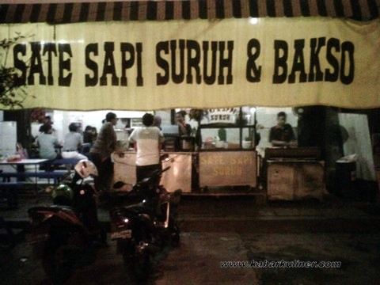
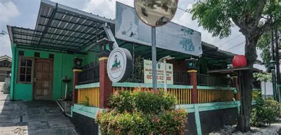
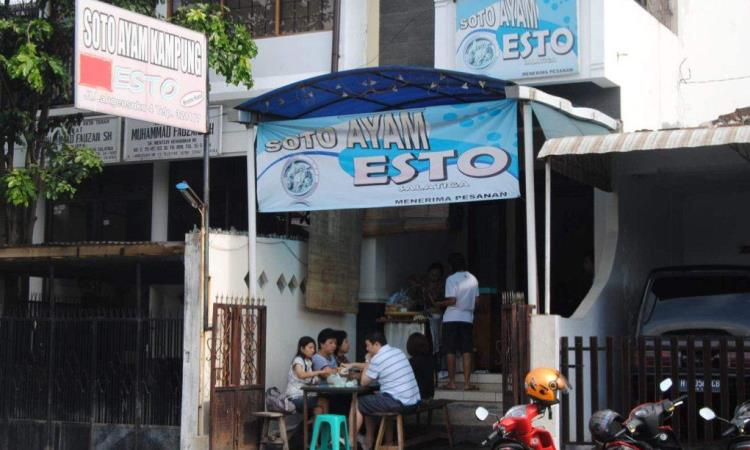
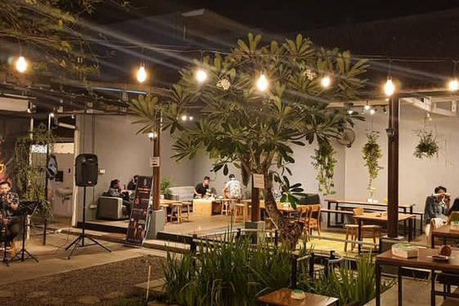

🌿 Mata Air Alami GratisMata Air Senjoyo
Pemandian sumber mata air jernih dengan pohon beringin raksasa ratusan tahun dan ribuan ikan jinak yang bisa diajak berenang.

🌾 Sawah & Senja Spot SenjaPohon Pengantin Pulutan
Pohon tunggal artistik di pematang sawah hijau dengan panorama siluet Gunung Merbabu saat matahari terbenam.

🏛️ Kolam Heritage Rp 5.000Taman Pemandian Kalitaman
Kolam renang bersejarah di pusat kota dengan sirkulasi air mata air alami tanpa kaporit yang dingin dan segar.

🥣 Wedang Hangat Legendaris 1964Wedang Ronde Jago
Racikan kuah jahe wangi penghangat malam dengan bulatan ronde sekoteng, kacang gurih, dan kulit jeruk kering.
 🍛 Sarapan Khas
Khas Otentik
🍛 Sarapan Khas
Khas Otentik
Tumpang Koyor Mbah Unggung
Kuah sambal tempe semangit gurih berempah dengan potongan koyor (urat sapi) tebal yang dimasak hingga lembut lumer.

🍢 Sate Daging Sapi Favorit TurisSate Sapi Suruh
Potongan daging sapi tanpa lemak yang dimarinasi rempah manis gurih, disajikan dengan bumbu kacang lembut dan lontong.

✨ Hidden Gem Kuliner Lumer HangatGethuk Kethek Salatiga
Olahan singkong kukus super lembut dan lumer tanpa pengawet, ditaburi parutan kelapa gurih segar. Wajib pesan sebelum jam 1 siang!

✨ Soto Santan Khas Legendaris Bus EstoSoto Esto Kerupuk Karak
Soto ayam kuah santan kuning gurih dengan taburan suwiran ayam kampung dan kerupuk karak (nasi kering) yang renyah.

✨ Spot Senja & Kopi View 3 GunungKedai & Kafe Lereng JLS
Deretan tempat ngopi outdoor di pinggir sawah dengan panorama Gunung Merbabu, Telomoyo, dan Gajah Mungkur berudara dingin.